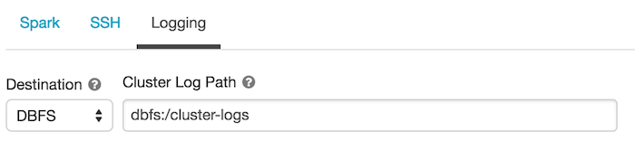

Databricks on AWS¶
Important
Starting August 30, 2023, we will remove the ability to create new data sources using the Databricks on AWS Native Connector. Support for the Databricks on AWS Native Connector will cease on December 1, 2023, as set out in Alation’s Support Policy. See the Transition from Native to OCF Connectors announcement in Alation Community (requires login to Community).
Available from version V R3 (5.6.0)
Databricks on AWS can be added as a data source of the type Databricks using the built-in (native) drivers for Databricks.
Required Information¶
JDBC URI¶
Depending on the Alation version, the driver and the URI format for the Databricks data source differ. The compatible driver versions can be found in the Support Matrix for your release: Support Matrices.
Use the following URI format:
spark://<hostname>:443/default;transportMode=http;ssl=1;httpPath=<databricks_http_path_prefix>/<databricks_cluster_id>;AuthMech=3;
Example
spark://dbc-65ebe48d-8ecb.cloud.databricks.com:443/default;transportMode=http;ssl=1;httpPath=sql/protocolv1/o/6625748827900751/0520-195244-whizz481;AuthMech=3;
Use the following format:
hive2://hostname:443/default;transportMode=http;ssl=true;httpPath=sql/protocolv1/o/123/cluster
Service Account¶
The Alation service account requires privileges to access the Databricks cluster for metadata extraction and profiling. You can use the following types of authentication:
Token-based authentication: For information on how to generate a unique token and use it for authentication, refer to this page in Databricks documentation.
Basic authentication with a username and password
Permissions for Metadata Extraction and Profiling¶
The service account must have the following permissions to perform MDE and profiling:
Workspace access — Refer to Manage users.
Cluster level access — Refer to Cluster access control.
By default, all cluster users have access to all data stored in a cluster’s managed tables unless table access control is enabled for that cluster. The table access control option is only available for high-concurrency clusters. Refer to Table Access Control for more information
If the Table Access Control option is enabled on the cluster:
Grant the SELECT privilege on all schemas and all their tables and views in a catalog.
GRANT USAGE ON CATALOG <catalog-name> TO `<user>@<domain-name>`; GRANT SELECT ON CATALOG <catalog-name> TO `<user>@<domain-name>`;Grant the SELECT privilege on a specific schema and all its tables and views.
GRANT USAGE ON SCHEMA <schema-name> TO `<user>@<domain-name>`; GRANT SELECT ON SCHEMA <schema-name> TO `<user>@<domain-name>`;Grant the SELECT privilege on specific tables and views in a schema.
GRANT USAGE ON SCHEMA <schema-name> TO `<user>@<domain-name>`; GRANT SELECT ON TABLE <schema-name>.<table-name> TO `<user>@<domain-name>`; GRANT SELECT ON VIEW <schema-name>.<view-name> TO `<user>@<domain-name>`;
Refer to Data object privileges for more information.
Query Log Ingestion¶
The Alation service account requires an AWS IAM role with the read permission for the Amazon S3 bucket that stores query logs.
You will need to run a log setup script on the Databricks cluster before configuring query log ingestion (QLI) in Alation. Additional information is available below.
Query Log Ingestion Setup¶
Configure an AWS IAM role to save the query logs in Amazon S3. For additional information on how to set up secure access to Amazon S3 buckets using an AWS IAM role, see this Databricks topic.
Note
The logs should be pointed to an S3 bucket other than the Databricks root S3 bucket. Do not use the root directory. The Databricks root S3 bucket operates like Alation’s chroot: it prevents outside tools from reading or modifying the files.
You can perform QLI either using a Python init script or a Scala script. In Alation version 2021.2 and later versions, we recommend using the Python init script as this approach generates smaller log files and the admin does not need to re-run the script after restarting the cluster.
Python Init Script¶
Applies from version 2021.2
This is the recommended option.
Perform the steps in this sections to enable QLI using a Python init script:
In the Databricks settings portal, ensure that the Cluster Log Path and Destination are set under the Logging tab. Do not leave the Destination path as None.
For more information on how to set the logging path in DBFS, see Databricks documentation.
You can choose to mount external storage onto the DBFS for log storage. For more information on the mount process, see:
Create a Python Notebook and run the script given below on your Databricks cluster using this Python notebook. This script creates the scripts directory to store the QLI script.
dbutils.fs.mkdirs("dbfs:/databricks/scripts/")
In the same notebook, run the next script to create the file with the init script in the scripts directory.
dbutils.fs.put("/databricks/scripts/init.sh",""" #!/bin/bash echo "Executing on Driver: $DB_IS_DRIVER" if [[ $DB_IS_DRIVER = "TRUE" ]]; then LOG4J_PATH="/home/ubuntu/databricks/spark/dbconf/log4j/driver/log4j.properties" else LOG4J_PATH="/home/ubuntu/databricks/spark/dbconf/log4j/executor/log4j.properties" fi echo "Adjusting log4j.properties here: ${LOG4J_PATH}" echo "log4j.logger.org.apache.spark.sql.execution.SparkSqlParser=DEBUG" >> ${LOG4J_PATH} echo "log4j.appender.publicFile.layout.ConversionPattern=%d{yyyy-MM-dd HH:mm:ss.SS} [%t] %p %c{1}: %m%n" >> ${LOG4J_PATH}""", True)
Note
Alternatively, you can create the init script locally and copy it to the Databricks cluster using the following command:
dbfs cp init.sh dbfs:/databricks/scripts/init.sh
Use the following command to make sure that the script was created successfully:
display(dbutils.fs.ls("dbfs:/databricks/scripts/init.sh"))
Use the cluster configuration page to configure the cluster to run the init script: Add init script.
Restart the cluster.
{kind=link}
Scala Script¶
Run the following script in the Databricks cluster through a Scala notebook. This script, provided by Databricks, enables debug logs having queries.
import org.apache.log4j.{LogManager, Level, ConsoleAppender}
import org.apache.commons.logging.LogFactory
import org.apache.log4j.PatternLayout
LogManager.getRootLogger().setLevel(Level.DEBUG)
val ca = LogManager.getRootLogger().getAppender("publicFile")
println("layout " + ca.getLayout.asInstanceOf[PatternLayout].getConversionPattern)
ca.setLayout(new PatternLayout("%d{yy/MM/dd HH:mm:ss} [%t] %p %c{1}: %m%n"));
Important
The above script should be run whenever the cluster is started or restarted. By default, Databricks does not enable debug level logs.
Configure Databricks in Alation¶
Service Account Credentials¶
If using token-based authentication, enter the token information in the Username and Password fields as follows:
For the Username, enter the word token.
For the Password, enter your token string:

Query Log Ingestion Configuration¶
You will see the option to enter the QLI settings in the initial setup wizard. Skip this step. You can enter the configuration information on the Query Log Ingestion tab on the data source Settings page as shown below:
Note
The common format of the Databricks log files is log4j-yyyy-mm-dd-hh.log.gz and the current hour log or real-time will be in the log4j-active.log. format.
Provide the values in the fields on the Query Log Ingestion tab as described below.
Apache Spark Settings¶
Spark Log Folder AWS S3 Path
Path of the file starting from the S3 bucket name in the following format:
/s3_bucket_name/path_to_the_file.
Example: /databricks-logging-20220420/dbc-36ad4224-mb19/0330-193314-wuadi0q9/driver
Spark Log File Name Prefix
A common name prefix for the files to be extracted is
log4j-.
Example: Files to be extracted usually have names like: log4j-2022-01-01-10.log.gz. Setting the prefix value to
log4j-serves this file name format.Number of Log files in directory
Optional parameter: if not specified, all files matching the prefix will be captured.
Log4j Time Format
The time format is set based on the init script you are using. The value should be set to
yyyy-MM-dd HH:mm:ss.SS.Log4j Conversion Pattern
The conversion pattern is set based on the init script you are using. The format is
TIMESTAMP [THREAD] LEVEL LOGGER MESSAGE.Note
The thread name for Databricks has a space. We enclose the thread name in square brackets to enable correct processing in Alation.
AWS S3 Settings¶
AWS Access Key ID
AWS Access Key Secret
AWS Region (the default is
us-east-1)Exclude log files - Provide the log file names that you want to exclude from ingestion.
Save the configuration and click Import to ingest the log files.
Migrating from Custom DB to Databricks¶
If you had previously set up a connection to Databricks using the Alation Custom DB connector, you can change the connection type to the native Databricks to be able to configure query log ingestion for this connection.
To change the connection, you will need the data source ID. It is visible in the URL on the data source page in the Alation UI. You will also need access to the Alation shell.
From your Alation host:
sudo /etc/init.d/alation shell
alation_psql
update rosetmeta_datasource set dbtype='databricks' where id = <data_source_id>;